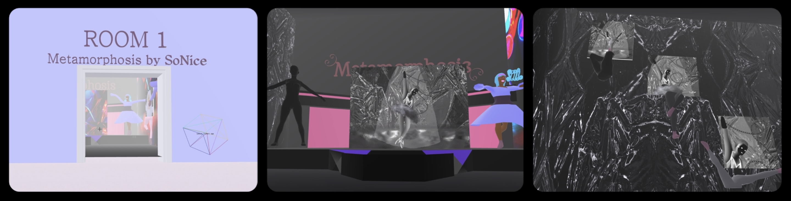

CADRE Mentorship Program Gallery
While in the CADRE Mentorship program I was able to work with my mentor Berenice Cortes in creating a virtual art instilation piece in New Art City. In the galleriy section labled SoNice(our group name) Sophia has always viewed a ballerina as beautiful and hardworking. Ballerinas are bound under strict scrutiny and chained to unique immense physical and mental discipline. As a storyteller they must endure that discipline. In metamorphosis the ballerina chooses to break away the chains, against the rules, to flow with her own individuality. Fulfilled through experimental movements, colors, mastery of the old, and grasp of the new. Once the ballerina has reached metamorphosis it is dreamlike to watch her hypnotically dance. Finally, breaking the mold. View Gallery in New Art City
